Les 13 artefacts
Réunir les reliques des dieux : le fil rouge de PanthEra.
Le but du jeu est de réunir les 13 artefacts. Il y a bien longtemps, les dieux ont enfermé une part de leur pouvoir dans des reliques, que le monde a dispersées. Trois viennent de chaque panthéon (Olympe, Kemet, Dharma) ; les quatre autres viennent de mythologies lointaines, nordique et japonaise, qui n'ont pas encore de panthéon dans le jeu.
Un personnage peut porter 6 artefacts à la fois (les cases des Dofus) : il faudra choisir.
Comment les obtenir
- Par les quêtes de ton dieu : clique sur sa statue, à Astrub. Il t'envoie de donjon en donjon, te donne de quoi y entrer, et te remet l'artefact à la fin. Trois quêtes par panthéon, dans l'ordre. Les niveaux indiqués ne sont que des repères : aucune quête n'a de condition de niveau.
- Sur le boss de leur donjon, plus rarement (de 5 % pour les donjons faciles à 0,5 % pour les plus durs ; la prospection augmente cette chance). C'est le seul moyen d'obtenir les artefacts des autres panthéons.
- Profanes : ils n'ont pas de dieu… alors ils volent. Voir les vols de Prométhée.
La liste
| Artefact | Mythologie | Effets | Boss qui peut le lâcher | Quête |
|---|---|---|---|---|
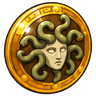 L'Égide | Olympe | 5 % de résistance à la terre 5 % de résistance à l'eau 5 % de résistance à l'air 5 % de résistance au feu 5 % de résistance neutre | Donjon des Craqueleurs : Craqueleur Légendaire (4,5 %) | L'Égide |
| La Foudre de Zeus | Olympe | Augmente les dommages de 10% | Labyrinthe du Minotoror : Minotoror (1,8 %) | La Foudre de Zeus |
| La Toison d'or | Olympe | +150 en vitalité | Donjon des Bouftous : Bouftou Royal (5 %) | La Toison d'or |
| L'Œil d'Horus | Kemet | +5 aux coups critiques | Donjon du Maître Corbac : Maître Corbac (3,6 %) | L'Œil d'Horus |
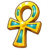 L'Ânkh | Kemet | +15 de soins | Forêt Maléfique (Dark Vlad) : Dark Vlad (2,4 %) | L'Ânkh |
| La Plume de Maât | Kemet | +20 en sagesse +10 % de chance d'esquiver les pertes de PA +10 % de chance d'esquiver les pertes de PM | Sanctuaire des familiers : Fantôme Léopardo (4,7 %) | La Plume de Maât |
| Le Sudarshana Chakra | Dharma | +8 de dommages | Donjon des Tofus : Batofu (5 %) | Le Sudarshana Chakra |
| Le Trishula | Dharma | +10 au retrait de PA +10 au retrait de PM | Repaire de Skeunk : Skeunk (2,8 %) | Le Trishula |
| L'Amrita | Dharma | +80 en vitalité +20 en prospection | Grotte Hesque : Corailleur Magistral (4,8 %) | L'Amrita |
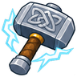 Mjöllnir | Nordique | +1 PA | Antre du Kralamoure Géant : Kralamoure Géant (0,5 %) | plus tard |
| Draupnir | Nordique | +20 en force +20 en intelligence +20 à la chance +20 en agilité | Donjon des Forgerons : Forgeron Sombre (0,7 %) | plus tard |
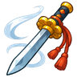 Kusanagi | Japonaise | +1 PM | Donjon des Dragoeufs : Crocabulia (1,1 %) | plus tard |
| Yata no Kagami | Japonaise | +1 à la portée Renvoie 10 dommages | Donjon des Firefoux : Péki Péki (1,8 %) | plus tard |
Effets provisoires : ils seront équilibrés pendant la phase de test.
Les quêtes des panthéons
À chaque étape, retourne voir ton dieu : il te félicite, te donne une récompense (expérience, pièces d'or) et de quoi entrer dans le donjon suivant. S'il te manque une clef, demande-lui : il t'en redonne une.
Olympe (Zeus, Artémis, Arès, Hermès)
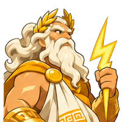
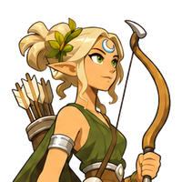
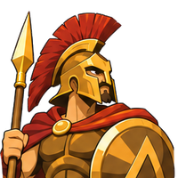
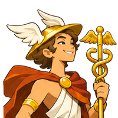
La Toison d'or
- Donjon des Champs [7,-25] : vaincre le Tournesol Affamé. Les héros de l'Olympe ont toujours commencé par des travaux modestes. Le Tournesol Affamé dévore les récoltes des Champs : délivre-les, et tu pourras ensuite affronter le gardien de la Toison.
- Donjon des Bouftous [2,-34] : vaincre le Bouftou Royal. Le Bouftou Royal garde la Toison d'or dans ses profondeurs : il la croit à lui. → La Toison d'or
L'Égide
- Donjon des Wabbits [29,-12] : vaincre le Wobot. Les Wabbits ont un roi de fer, le Wobot, forgé dans le métal le plus dur. Si tes coups viennent à bout de son armure, ils viendront à bout de la pierre des Craqueleurs.
- Donjon des Craqueleurs [-3,-7] : vaincre le Craqueleur Légendaire. Le Craqueleur Légendaire s'est emparé de l'Égide : son regard l'a changé en pierre vivante. → L'Égide
La Foudre de Zeus
- Donjon des Abraknydes [-9,-14] : vaincre l'Abraknyde Ancestral. Le chêne est l'arbre sacré du roi des dieux. Le plus vieux des Abraknydes a entendu l'écho de la Foudre quand elle a quitté l'Olympe : vaincs-le, et la forêt te montrera le chemin.
- Donjon des Canidés [-24,1] : vaincre le Meulou. La forêt a parlé : la Foudre a été emportée vers l'ouest par une meute. Le Meulou, chef des Canidés, a flairé sa trace jusqu'au labyrinthe ; arrache-lui ce qu'il sait.
- La Gorge de Bherb [-51,9] : vaincre Silf le Rasboul Majeur. Le Meulou a parlé avant de tomber : les Rasbouls de la Gorge de Bherb connaissent un passage vers le cœur du labyrinthe. Silf le Rasboul Majeur en garde le secret.
- Le labyrinthe du Minotoror [-42,-17] : vaincre le Minotoror. La Foudre de Zeus repose au cœur du labyrinthe, sous la garde du Minotoror. → La Foudre de Zeus
Kemet (Bastet, Hathor, Osiris, Anubis)
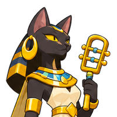
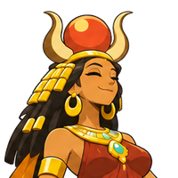
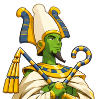
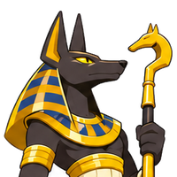
La Plume de Maât
- Donjon des Champs [7,-25] : vaincre le Tournesol Affamé. Chez nous, tout commence par la moisson : avant de peser les âmes, il faut savoir faire pousser le blé. Le Tournesol Affamé dévore les récoltes des Champs ; rends à la terre ce qui lui appartient.
- Donjon des Scarafeuilles [1,26] : vaincre le Scarabosse Doré. Le scarabée pousse le soleil chaque matin et renaît chaque jour. Les Scarafeuilles ont oublié ce secret, mais leur maître, le Scarabosse Doré, sait encore ouvrir le passage vers les âmes.
- Sanctuaire des familiers [-7,-1] : vaincre le Fantôme Léopardo. La Plume de Maât est tombée au Sanctuaire des familiers, où des âmes d'animaux attendent leur jugement. Le Fantôme Léopardo la garde jalousement. → La Plume de Maât
L'Œil d'Horus
- Donjon des Abraknydes [-9,-14] : vaincre l'Abraknyde Ancestral. L'Œil d'Horus a été emporté par les airs. Les plus vieux arbres l'ont vu passer : l'Abraknyde Ancestral te dira vers où il s'est envolé, si tu le vaincs.
- Donjon du Maître Corbac [-20,-62] : vaincre le Maître Corbac. Le Maître Corbac garde l'Œil d'Horus : un oiseau qui se prend pour un dieu-faucon. → L'Œil d'Horus
L'Ânkh
- Château d'Amakna [6,-9] : vaincre Sphincter Cell. Un vampire craint la lumière, mais pas les rats. Ceux du château d'Amakna lui servent d'yeux et d'oreilles : renverse leur chef, Sphincter Cell, et le seigneur de la forêt ne te verra pas venir.
- Donjon des Canidés [-24,1] : vaincre le Meulou. Les chiens sont les gardiens des morts, et ceux-là servent désormais un mort qui refuse de l'être. Vaincs le Meulou : les chacals de Kemet ne supportent pas cette trahison.
- La Forêt Maléfique [-2,14] : vaincre Dark Vlad. Dark Vlad garde l'Ânkh au fond de la Forêt Maléfique : il espère qu'il lui rendra la vie. → L'Ânkh
Dharma (Vishnou, Kubera, Saraswati, Mahâkâla)
Le Sudarshana Chakra
- Donjon des Champs [7,-25] : vaincre le Tournesol Affamé. Toute sagesse commence par un geste humble. Le Tournesol Affamé dévore les récoltes des Champs : rends au champ ce qui lui appartient, et le disque te trouvera digne.
- Donjon des Tofus [5,6] : vaincre le Tofu Royal ou le Batofu. Le Sudarshana Chakra est au donjon des Tofus : le Tofu Royal et le Batofu se le disputent. → Le Sudarshana Chakra
L'Amrita
- La caverne des Bulbes [19,-22] : vaincre le Bulbig. L'Amrita appelle tout ce qui pousse. Les Bulbes en ont bu quelques gouttes et grandissent sans mesure : leur chef, le Bulbig, te montrera jusqu'où le nectar a coulé.
- La Grotte Hesque [-59,15] : vaincre le Corailleur Magistral. Le Corailleur Magistral garde l'Amrita au fond de la Grotte Hesque. → L'Amrita
Le Trishula
- Donjon des Abraknydes [-9,-14] : vaincre l'Abraknyde Ancestral. Le Trishula a été forgé dans le feu des montagnes, mais il a d'abord traversé les forêts. L'Abraknyde Ancestral en porte encore la brûlure : vaincs-le pour suivre sa trace.
- Donjon des Blops [-25,-17] : vaincre un des Blops Royaux. En frappant le sol, le Trishula a séparé les couleurs du monde, et les Blops Royaux règnent sur ce qu'il en reste. Vaincs l'un d'eux pour recueillir l'éclat du trident.
- Le repaire du Dragon Cochon [-1,33] : vaincre le Dragon Cochon. Le poison de Skeunk ne s'affronte pas sans s'endurcir. Le Dragon Cochon souffle un feu aussi mauvais : si tu y résistes, rien ne t'arrêtera plus.
- Le repaire de Skeunk [-20,10] : vaincre Skeunk. Skeunk garde le Trishula dans son repaire : son poison ne t'arrêtera pas. → Le Trishula
Les vols des Profanes
Prométhée, le titan enchaîné qui a volé le feu aux dieux, attend les Profanes près du zaap d'Astrub. Pour lui, les reliques appartiennent aux mortels. Il propose trois vols, un par panthéon, dans l'ordre :
- Premier vol : tu choisis le panthéon, et tu voles son premier artefact.
- Deuxième vol : un autre panthéon, son deuxième artefact.
- Troisième vol : le dernier panthéon, son troisième artefact.
Les donjons sont les mêmes que pour les fidèles des dieux, et Prométhée fournit de « fausses clefs ». Mais quand tu reviens avec la relique, l'ombre du dieu volé surgit pour la reprendre : bats-la, et l'artefact est à toi. En cas de défaite, reparle à Prométhée pour retenter.
| Vol | Panthéon | Artefact | Donjons | Gardien final |
|---|---|---|---|---|
| Vol 1 | L'Olympe | La Toison d'or | donjon des Champs → donjon des Bouftous | Ombre d'Hermès (niveau ~50) |
| Vol 2 | L'Olympe | L'Égide | donjon des Wabbits → donjon des Craqueleurs | Ombre d'Arès (niveau ~65) |
| Vol 3 | L'Olympe | La Foudre de Zeus | donjon des Abraknydes → donjon des Canidés → la Gorge de Bherb → le labyrinthe du Minotoror | Ombre de Zeus (niveau ~150) |
| Vol 1 | Kemet | La Plume de Maât | donjon des Champs → donjon des Scarafeuilles → Sanctuaire des familiers | Ombre d'Anubis (niveau ~60) |
| Vol 2 | Kemet | L'Œil d'Horus | donjon des Abraknydes → donjon du Maître Corbac | Ombre d'Hathor (niveau ~95) |
| Vol 3 | Kemet | L'Ânkh | château d'Amakna → donjon des Canidés → la Forêt Maléfique | Ombre d'Osiris (niveau ~130) |
| Vol 1 | Le Dharma | Le Sudarshana Chakra | donjon des Champs → donjon des Tofus | Ombre de Vishnou (niveau ~50) |
| Vol 2 | Le Dharma | L'Amrita | la caverne des Bulbes → la Grotte Hesque | Ombre de Saraswati (niveau ~55) |
| Vol 3 | Le Dharma | Le Trishula | donjon des Abraknydes → donjon des Blops → le repaire du Dragon Cochon → le repaire de Skeunk | Ombre de Mahâkâla (niveau ~120) |
Artefacts nordiques et japonais : leurs quêtes viendront plus tard.